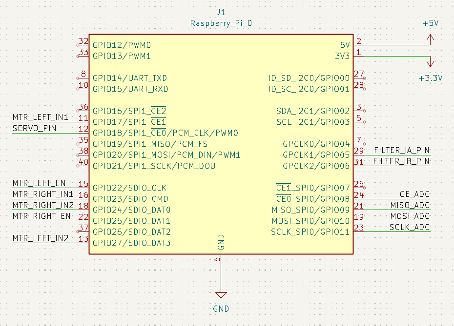

Electronics¶
The BushBot’s electronics system manages power regulation, sensor input, and actuator control for stable and efficient operation.
Power Supply¶
| Source | Voltage | Destination |
|---|---|---|
| Tethered supply | 12 V | Input to voltage regulation board |
| Regulated output | 5 V | Raspberry Pi Zero 2 W, servo motor |
| Regulated output | 3.3 V | Logic-level shifter, LDR, and IR-filter control |
Warning
Always confirm correct polarity before applying power.
Reverse polarity may permanently damage components.
The 12 V input is stepped down to 5 V and 3.3 V using a Pololu D24V25F5 regulator and LM317 linear regulator respectively.
This ensures stable operation of both high-current components (servo, logic drivers) and low-noise sensors (LDR, ADC).
GPIO and Signal Connections¶
All peripherals are connected through the Raspberry Pi Zero 2 W’s GPIO header as shown below.
| Component | GPIO Pin | Function | Notes |
|---|---|---|---|
| Servo motor | GPIO 17 | PWM control | Camera tilt ±30° |
| IR-filter driver (L9110) | GPIO 4 / GPIO 5 | Filter A / Filter B | Controls electromagnet polarity |
| LDR (Light Sensor) | SPI0 (CE0, MOSI, MISO, SCLK) | Via MCP3008 ADC | Monitors ambient brightness |
| Motor driver (left) | GPIO 17, 27, 22 | IN1 / IN2 / EN | Optional mobile-base control |
| Motor driver (right) | GPIO 23, 24, 25 | IN1 / IN2 / EN | Optional mobile-base control |
| Microphone (USB) | — | Audio input | Captures environmental sound |
| Camera module | Pi CSI port | Video feed | IR-assisted module |
Connection Diagram¶
Use the image below as a reference when wiring your payload.
Each GPIO pin is clearly labelled for the servo, motor drivers, light sensor, and IR-filter interface.

Figure 1. Raspberry Pi Zero 2 W pin mapping and BushBot peripheral connections.
Wiring Notes¶
- When connecting components, work on an electrostatic-safe mat to avoid damage.
- Use consistent wire colours: red = V+, black = GND, yellow/white = signal.
- Make sure all modules share a common GND between the Pi, voltage regulators, and H-bridge.
- Keep 12 V power lines short to minimise voltage drop.
- Secure servo and motor connectors firmly to prevent vibration-related disconnects.
- Before powering on, check continuity between power and ground to ensure there are no shorts — this can save your board from frying.
Quick Verification¶
Once powered, run these checks to confirm that everything is working as expected:
- Measure the 5 V and 3.3 V rails with a multimeter to confirm stable voltage levels.
- Move the camera tilt through its −30° ↔ +30° range and ensure it clears the CSI ribbon without strain.
- Confirm the IR filter toggles correctly under light and dark conditions (or when manually switched in the GUI).
- Run
python utils.pyto verify that all hardware interfaces — GPIO, SPI, USB, and ADC — are correctly detected and responsive.
This configuration ensures stable communication between the sensors, actuators, and processing units while maintaining low noise and reliable performance in field conditions.